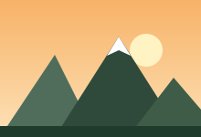
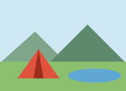

Вихідні на Петросі
2 дні, 24 км, складність: середня.
14–15 грудня

Клуб «Вершина» об'єднує студентів, які люблять гори, нічліг у наметі та ранкову каву з видом на хмари. Ми ходимо в походи вихідного дня, організовуємо літні експедиції Карпатами й вчимо новачків орієнтуватися з картою та компасом.
Кожен похід починається з інструктажу: ми перевіряємо спорядження, розподіляємо обов'язки та прокладаємо маршрут. Досвідчені учасники допомагають новачкам, тож долучитися може будь-хто, хто готовий пройти 15 км за день з рюкзаком.
Увага! Перед кожним виходом обов'язково зареєструйте групу в рятувальній службі.

Взимку клуб проводить тренування зі скелелазіння у залі та лекції з першої допомоги. Навесні ми відкриваємо сезон сплавом річкою, а восени традиційно піднімаємося на Говерлу.
Членський внесок символічний і йде на прокат спільного спорядження: наметів, пальників, мотузок та аптечок. Власне спорядження можна придбати з клубною знижкою в партнерських магазинах.
Колір фону мітки змінюється залежно від стану прапорця: звичайний, наведення, фокус, обраний, недоступний.
2 дні, 24 км, складність: середня.
14–15 грудня
1 день, 16 км, складність: висока.
11 січня
3 дні, 30 км, складність: низька.
7–9 лютого
Елементи 1–8 ділять перший рядок порівну, 9-й займає весь другий рядок.